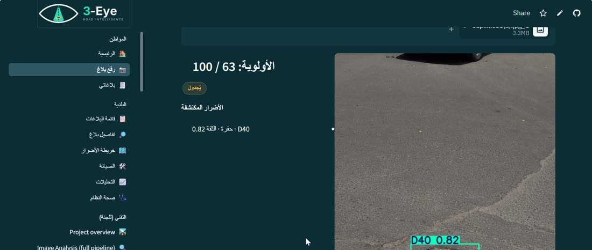
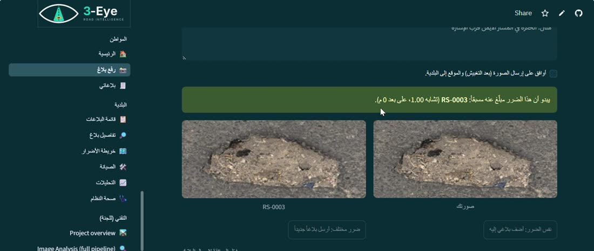
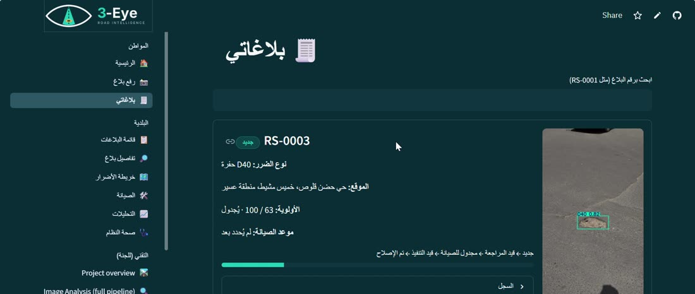
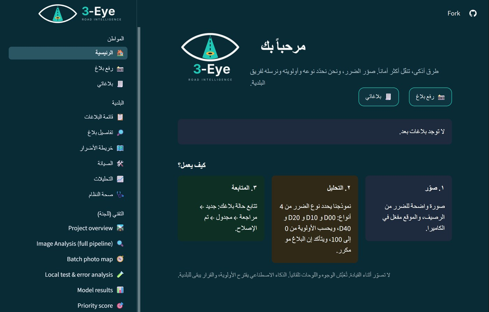
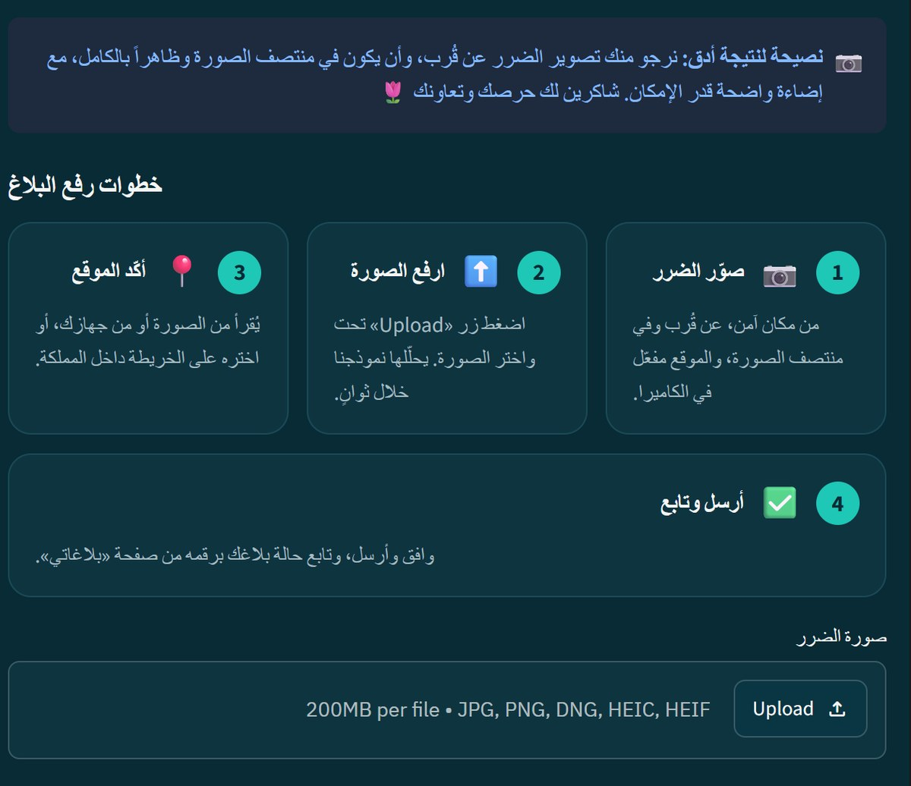

AI Engineer · Machine Learning · Computer Visionمهندسة ذكاء اصطناعي · تعلّم آلة · رؤية حاسوبية
Fajer
Al-Shahraniفجر الشهراني
I build أبني road-damage detectors
Computer Science graduate from King Khalid University, with the AI track. I build models that solve a clear problem, and I report what they can and cannot do.خريجة علوم الحاسب من جامعة الملك خالد، مسار الذكاء الاصطناعي. أبني نماذج تحل مشكلة واضحة، وأذكر بصراحة ما تقدر عليه وما لا تقدر عليه.
Careful models, honest results.نماذج بعناية، ونتائج بصدق.
I graduated in Computer Science from King Khalid University (Second Class Honors, GPA 4.41/5) and completed the AI Engineer Program (AIEP) by Olo Academy with the Ministry of Communications and Information Technology. My work covers image classification, object detection and similarity search in Python and PyTorch.تخرجت في علوم الحاسب من جامعة الملك خالد (مرتبة الشرف الثانية، معدل 4.41 من 5) وأنهيت برنامج مهندس الذكاء الاصطناعي (AIEP) من أكاديمية أولو بالتعاون مع وزارة الاتصالات وتقنية المعلومات. أعمل على تصنيف الصور وكشف الأجسام والبحث بالتشابه بلغة Python وPyTorch.
I am looking for a junior AI / ML engineer role in Saudi Arabia, where I can keep building and learning on real data.أبحث عن وظيفة مهندسة ذكاء اصطناعي / تعلّم آلة مبتدئة في السعودية، أكمل فيها البناء والتعلم على بيانات حقيقية.
3-Eye RoadScan
A system that reads road photos, finds damage and ranks which reports a maintenance team should handle first. The detector (YOLOv8s) finds four types: longitudinal crack, transverse crack, alligator crack and pothole. Training data is RDD2022, 8,999 images from three countries.نظام يقرأ صور الطرق ويكتشف التلف ويرتّب البلاغات التي يبدأ بها فريق الصيانة. الكاشف (YOLOv8s) يتعرف على أربعة أنواع: شق طولي، شق عرضي، تشقق جلد التمساح، وحفرة. بيانات التدريب RDD2022 وفيها 8,999 صورة من ثلاث دول.
Baseline classifierالنموذج الأساسي
ResNet-18 trained as the reference point every later change is compared to.ResNet-18 كنقطة مقارنة تُقاس عليها أي تحسينات لاحقة.
Priority scoreدرجة الأولوية
A 0–100 score from damage type, size, count and confidence. A ±20% weight test left the top 10 unchanged.درجة من 0 إلى 100 من نوع التلف وحجمه وعدده والثقة. تغيير الأوزان ±20% لم يغيّر أعلى 10.
Duplicate finderكاشف التكرار
DINOv2 image embeddings with FAISS search, plus class and GPS distance, so one pothole reported twice becomes one case.تمثيلات DINOv2 مع بحث FAISS، مع النوع والمسافة بالـGPS، فالحفرة المبلّغ عنها مرتين تصير حالة واحدة.
My part.جزئيتي. The ResNet-18 baseline and its evaluation, the priority score with its sensitivity check, and the duplicate finder compared against two other methods. Staff make the final call on every merge.النموذج الأساسي ResNet-18 وتقييمه، ودرجة الأولوية مع اختبار الحساسية، وكاشف التكرار مقارنةً بطريقتين أخريين. الموظف يتخذ القرار النهائي في كل دمج.
Limits, stated plainly: this is a prototype. The score weights and the Urgent / Schedule / Monitor bands are proposals that a road authority would need to validate. The macro-F1 drop on US data shows the model does not transfer well across countries.الحدود بوضوح: هذا نموذج أولي. أوزان الدرجة ونطاقات عاجل / جدولة / مراقبة مقترحات تحتاج جهة الطرق لاعتمادها. انخفاض macro-F1 على بيانات أمريكا يعني أن النموذج لا ينتقل جيدًا بين الدول.
The live appالتطبيق الحي
Arabic interface for citizens. Report a damaged road in four steps, then follow its status from new to fixed.واجهة عربية للمواطن. تبلّغ عن طريق متضرر في أربع خطوات ثم تتابع حالته من جديد إلى تم الإصلاح.





From photo to work orderمن الصورة إلى بلاغ مرتب
Five stages. The model suggests, staff decide.خمس مراحل. النموذج يقترح والموظف يقرر.
The numbersالأرقام
Measured on our own runs. Speeds are CPU, no GPU.من تجاربنا نحن. السرعات على CPU بدون GPU.
Baseline classifierالنموذج الأساسي
ResNet-18, macro-F1. The drop on US images is why I call this a prototype.ResNet-18، مقياس macro-F1. انخفاضه على صور أمريكا هو سبب وصفي للمشروع بنموذج أولي.
Try the priority scoreجرّب درجة الأولوية
The same formula as the project: 100 × (0.45 type + 0.20 size + 0.20 count + 0.15 confidence). Each input is scaled 0–1 here. The weights and bands are proposals, not validated by a road authority.نفس معادلة المشروع: 100 × (0.45 النوع + 0.20 الحجم + 0.20 العدد + 0.15 الثقة). كل مدخل بين 0 و1 هنا. الأوزان والنطاقات مقترحة ولم تعتمدها جهة طرق.
Monitor 0–39 · Schedule 40–69 · Urgent 70–100مراقبة 0–39 · جدولة 40–69 · عاجل 70–100
Duplicate finderكاشف التكرار
Two reports merge only when all three conditions hold.بلاغان يندمجان فقط لما تتحقق الشروط الثلاثة.
The test set is small, so I read these as a sign the method works, not as a guarantee. Photos taken with a phone gave weaker results and still need confirming.مجموعة الاختبار صغيرة، فأقرأ الأرقام كدليل أن الطريقة تشتغل وليست ضمانًا. الصور الملتقطة بالجوال أعطت نتائج أضعف وتحتاج تأكيدًا.
Technical cardالبطاقة التقنية
What each component takes in, what it gives out, and how it was measured.كل مكوّن: ما يدخله، ما يخرجه، وكيف تم قياسه.
| Componentالمكوّن | Model / methodالنموذج / الطريقة | Input → outputالمدخل ← المخرج | Measuredالقياس |
|---|---|---|---|
| Detectorالكاشف | YOLOv8s | photo → boxes (D00, D10, D20, D40) + confidence | 0.16–0.19 s / image, CPU |
| Baselineالنموذج الأساسي | ResNet-18 | photo → damage class | macro-F1 0.496 val · 0.362 US |
| Priorityالأولوية | weighted rule, no training | type, size, count, confidence → 0–100 + band | top 10 stable at ±20% weights |
| Embeddingالتمثيل | DINOv2-small | photo → feature vector | compared with 2 other methods |
| Searchالبحث | FAISS, cosine | vector + class + GPS → nearest open report | 8/9 caught · 0/24 false merges |
| Appالتطبيق | Streamlit, Arabic UI | photo → report with status | ~2–3 s end to end |
- type 0.45
- size 0.20
- count 0.20
- confidence 0.15
- D40 1.0
- D20 0.8
- D10 0.5
- D00 0.4
- Cross-country drop: macro-F1 0.496 on validation, 0.362 on US images.انخفاض عبر الدول: macro-F1 0.496 على التحقق، 0.362 على صور أمريكا.
- Duplicate thresholds come from a small set: 4 of 36 false merges while tuning, 0 of 24 on test.عتبات التكرار من مجموعة صغيرة: 4 من 36 دمج خاطئ أثناء الضبط، و0 من 24 في الاختبار.
- Priority weights and bands are proposals, not validated by a road authority.أوزان الأولوية ونطاقاتها مقترحات لم تعتمدها جهة طرق.
- Phone photos gave weaker results and still need confirming.صور الجوال أعطت نتائج أضعف وتحتاج تأكيدًا.
Tools I work with.الأدوات التي أشتغل بها.
- Python
- SQL (basics)
- Java
- scikit-learn
- pandas
- NumPy
- PyTorch
- CNNs · ResNet-18
- YOLOv8
- DINOv2
- FAISS
- Git
- Jupyter
- Kaggle
- Power BI (basics)
Training, work and study.التدريب والعمل والدراسة.
AI Engineer Program (AIEP) traineeمتدربة في برنامج مهندس الذكاء الاصطناعي (AIEP)
Olo Academy × MCIT · 200 h
Applied ML, deep learning and computer vision, ending in the 3-Eye RoadScan capstone.تعلّم آلة تطبيقي وتعلم عميق ورؤية حاسوبية، وتنتهي بمشروع 3-Eye RoadScan.
IT cooperative trainee, SECمتدربة تعاوني في تقنية المعلومات، SEC
- Resolved about 15 support issues across 30+ workstations.حللت قرابة 15 مشكلة دعم على أكثر من 30 جهازًا.
- Wrote reports and documentation for the team.كتبت تقارير وتوثيقًا للفريق.
B.Sc. Computer Science, AI trackبكالوريوس علوم الحاسب، مسار الذكاء الاصطناعي
King Khalid University · GPA 4.41 / 5 · Second Class Honorsمرتبة الشرف الثانية
- AIEP Certificate · 2026
- AI Literacy · IBM SkillsBuild · 2026
- IBM Data Analyst · in progressIBM Data Analyst · قيد الدراسة
- Arabic · nativeالعربية · الأم
- English · professionalالإنجليزية · احترافي
Let's talk about a role or a project.خلنا نتكلم عن وظيفة أو مشروع.
Email or a LinkedIn message both reach me.أسرع طريقة للتواصل رسالة على لينكدإن.